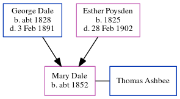

Mary Ashbee (née Dale) c1852 -
[ Home ] | [ Calendar ] | [ Surnames Index ] | [ Census Index ] | [ Family History ]The child of George Dale (an agricultural laborer) and Esther Poysden (a servant), Mary Dale, the great-great-aunt of Nigel Horne, was born in Chartham, Kent, England c. 18521,2. She was married to Thomas Ashbee.
During her life, she was living at her birthplace in 18611; and in Chartham Hatch, Kent, England on Apr 7, 18613.
Parents
- George was born c. 1828
- Esther was born in 1825
Citations
- 1861 England Census Online publication - Provo, UT, USA: The Generations Network, Inc., 2005.Original data - Census Returns of England and Wales, 1861. Kew, Surrey, England: The National Archives of the UK (TNA): Public Record Office (PRO), 1861. Data imaged from the National
- England & Wales, FreeBMD Birth Index, 1837-1915 Online publication - Provo, UT, USA: The Generations Network, Inc., 2006.Original data - General Register Office. England and Wales Civil Registration Indexes. London, England: General Register Office. © Crown copyright. Published by permission of the Cont
- 1861 England, Wales & Scotland Census - Findmypast (was age 9 and the daughter of the head of the household)
Family Tree
Generated by ged2site. Last updated on Jun 11, 2024